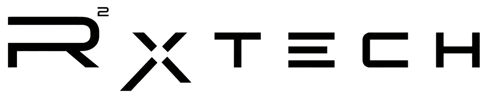

Parametric pipelines, model automation, AI systems. Built on your stack, handed over documented.
$7.1M of avoidable rework for every $1bn of revenue.
It never arrives as an invoice marked rework. It arrives as overtime, a change order, a slipped programme, so it never gets a line to defend.
An investment is decided once. A workaround is paid for every time.
A drawing in, a coordinated model out: estimate, programme and 4D link from the same records.
Describe one workflow in three lines. We will tell you whether it is worth automating, and if the numbers don't work, we'll say so on the first call.